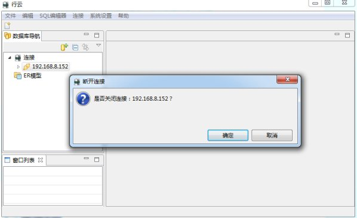

①、在客户端成功启动之后，在右键点击连接节点，出现新建连接菜单（或者单击工具栏的连接），弹出如图所示的界面
②、单击新建连接会进入如图所示的界面，
③、添加连接需要的信息：本地连接名，用户名，密码，数据库名，主机地址，端口。
④、信息填写完成后可以单击测试连接按钮测试连接是否能够连接成功，如图所示。
⑤、点击完成按钮连接会出现在右侧树的连接节点下，如下图。
①、右键单击数据库节点弹出连接菜单，如图
②、点击连接，可以选择不同连接，默认是当前选择的连接，如图：
③、点击连接，如果数据库连接成功，数据库的图标会变亮，如图：
①、在已经连接成功的数据库上右键弹出菜单，找到断开连接，如图
②、单击断开连接，会弹出是否确定断开连接的对话框，如图

③、单击确定断开连接，数据库断开连接成功，图标会变暗，如图：
①、在断开连接的情况下，可以编辑连接，单击节点右键，如图：
②、选择编辑连接弹出如图所示的对话框，对连接信息进行编辑修改 。
①、在断开连接的情况下可以对连接重命名，选中节点右键，单击重命名，如图：
②、弹出如图下图所示的对话框，输入新的连接名
③、单击确定按钮，重命名成功．结果如下图所示如下图所示：
右键数据库连接点，出现菜单，找到复制操作如下图
当点击复制之后，数据库连接名将会复制到系统粘贴板上
①、在断开连接的情况下，右键本地连接名如图:
②、点击删除，弹出如图所示的对话框，单击确定按钮，删除连接
③、删除成功后左侧树节点上该链接消失，如图：
右键本地连接名，单击刷新，成功刷新本次连接，如图所示．
①、右键本地连接名出现属性菜单，如图
②、点击属性，可以查看连接属性包含：本地连接名，数据库名，主机地址，端口，用户名，连接模式和内存空间，但是不可编辑，如图：
①、当成功连接上数据库节点时，右键本地连接名出现SQL编辑器菜单，如图
②、点击SQl 编辑器，出现sql编辑面板 如下图：
③、在SQL编辑面板中输入SQL 语句，执行后如下图：